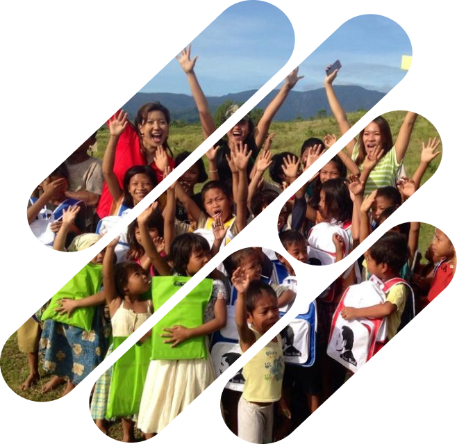

Mewujudkan kesempatan dan kepedulian dalam satu gerakan yang setara.

Dari kreativitas, kebaikan hati, lalu berakhir pada dampak nyata bagi mereka yang membutuhkan
Kreator Digital
Ilustrator, desainer, photographer, copywriter, para developer, dan lainnya menyumbangkan karya ke katalog kebaikan KindlyJAR.
Kebaikan Donatur
Donatur membeli karya dari katalog, dana yang terkumpul menjadi kontribusi untuk program donasi.
Penyaluran Dampak
Dana disalurkan untuk membantu kebutuhan masyarakat yang kurang mampu, hasil dilaporkan secara transparan.
Lima hati, satu misi: memastikan setiap karya berubah menjadi kebaikan nyata
Founder & CEO
Merancang arah misi dan kemitraan strategis KindlyJAR.
Co-Founder & CTO
Membangun infrastruktur transparan berbasis data.
Head of Creative
Mengelola karya Hero dan pengesah visual katalog.
Campaign & Community Lead
Mengatur kampanye donasi, menjaring komunitas Hero dan Saviors.
Kami berkomitmen menjaga setiap rupiah mengalir dengan jujur. Berikut adalah komitmen alokasi dana yang terkumpul melalui platform KindlyJAR.